자료 찾기와 맥락 기억하기: 엔터프라이즈 서치 · 생산성
앤트로픽이 직무별로 만든 Claude 플러그인 11개를 짧게 훑는 영상이에요. 아래 화면처럼 이 묶음은 GitHub의 anthropics/knowledge-work-plugins 저장소에 공개돼 있어요. 영상을 만들 때 GitHub 트렌딩 3위였다고 해요.
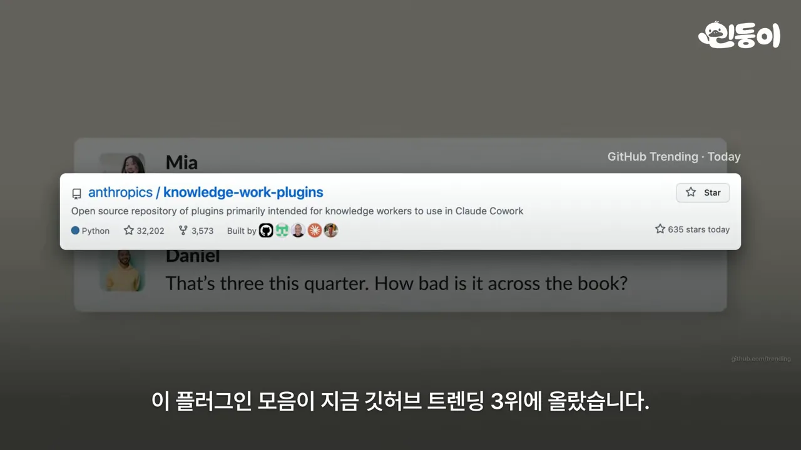
진행자는 이 플러그인들이 올해 초 소프트웨어 회사 주가를 하루 만에 400조 원 가까이 떨어뜨렸다고 소개해요. 아래 화면은 그 근거로 보여 준 블룸버그 차트예요. 날짜는 2026년 2월 3일, 제목은 'Software Plunges on AI Concerns'이고, 큰 글씨 아래에 $285B가 적혀 있어요.
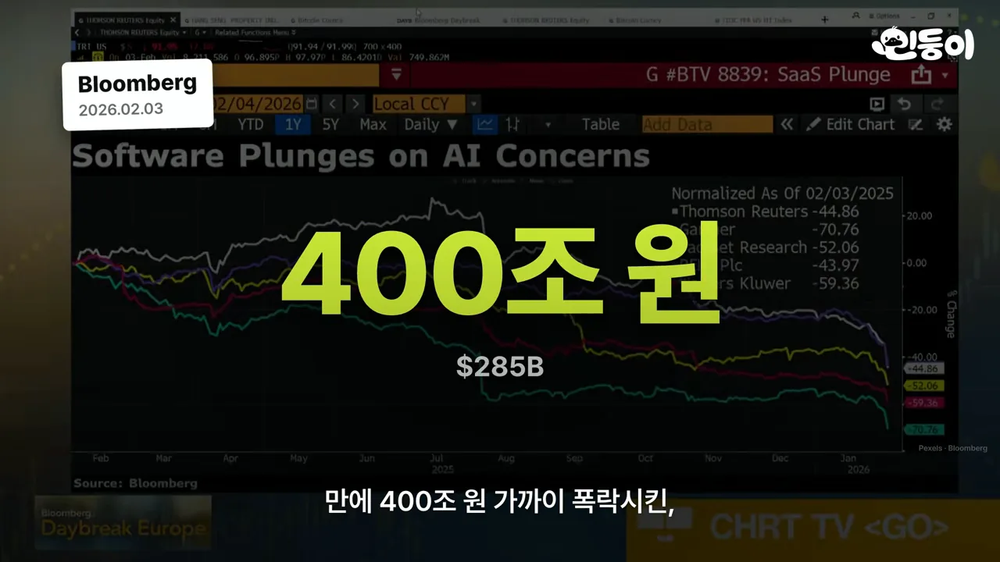
영상이 소개하는 11개를 먼저 표로 보면 이래요.
| 플러그인 | 영상이 보여 준 일 |
|---|---|
| 엔터프라이즈 서치 | 메신저·메일·문서를 한 번에 뒤져 출처 달린 답 정리 |
| 생산성 | 사람·용어·줄임말·프로젝트를 메모로 쌓고, 할 일 관리 |
| 영업 | 고객 미팅 준비 문서 한 장 |
| 고객 지원 | 답장 초안, 해결한 문의를 도움말 문서로 |
| 제품 기획 | 흩어진 불편을 모아 순서를 매긴 기획서 |
| 마케팅 | 경쟁사 브리프, 채널별 캠페인과 콘텐츠 일정 |
| 데이터 | 조회와 그래프, 공유 전 계산 검증 |
| 재무 | 계획과 실제의 차이 분석 |
| 법무 | 불리한 조항 짚기, 비밀 유지 계약서 세 색 분류 |
| 생명과학 | 논문·임상시험·유전체 데이터 연결 |
| 플러그인 관리 | 위 플러그인을 내 방식에 맞게 고치거나 새로 만들기 |
엔터프라이즈 서치: 흩어진 자료를 한 번에
분명 어디서 얘기했는데 어디였는지 기억이 안 날 때가 있죠. 그럴 때 메신저, 메일, 드라이브를 하나씩 여는 대신 쓰는 게 엔터프라이즈 서치예요. 아래 저장소 설명 칸에 'one query across all your company's tools'라고 적혀 있고, 오른쪽에 붙일 수 있는 도구로 Slack, Notion, Guru, Jira, Asana, Microsoft 365가 있어요.
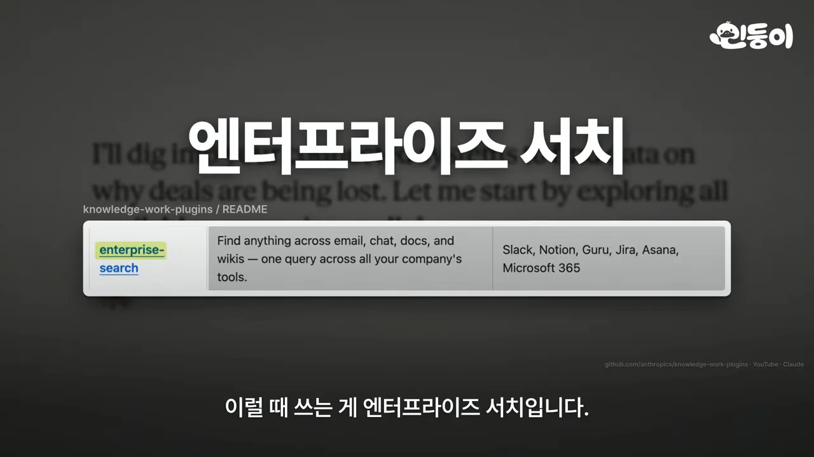
같은 얘기가 여러 곳에 있으면 어느 걸 믿을지가 문제예요. 아래 스킬 파일의 강조된 줄은 'Freshness: More recent results rank higher'예요. 결정이나 상태를 묻는 질문이면 최근 결과를 앞에 둬요.
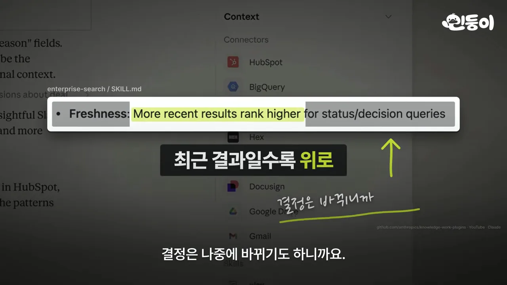
생산성: 우리끼리 쓰는 말을 기억해요
자료 찾기만큼 귀찮은 게 새 대화를 열 때마다 같은 설명을 반복하는 일이에요. 생산성 플러그인에서 눈여겨볼 건 '우리끼리 메모'예요. 아래 메모에 사람(Todd · 재무 담당), 용어(현황 보고서), 줄임말(PSR(Pipeline Status Report) · Pipeline Status Report), 프로젝트(Oracle · 오라클 건)가 한 줄씩 쌓여 있어요.
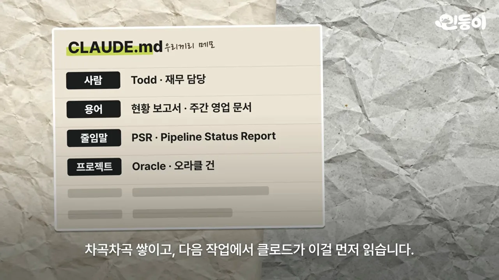
공식 예시도 있어요. 아래 스킬 파일에서 "ask todd to do the PSR for oracle"이라는 한 줄을 Claude가 어떻게 푸는지 보여 줘요. todd는 재무 담당 Todd Martinez, PSR은 주간 영업 문서인 Pipeline Status Report, oracle은 회사가 아니라 오라클 건이에요. 아래 Architecture를 보면 자주 쓰는 30명쯤과 용어는 CLAUDE.md에, 전체 용어집과 인물 정보는 memory/ 폴더에 나눠 둬요.
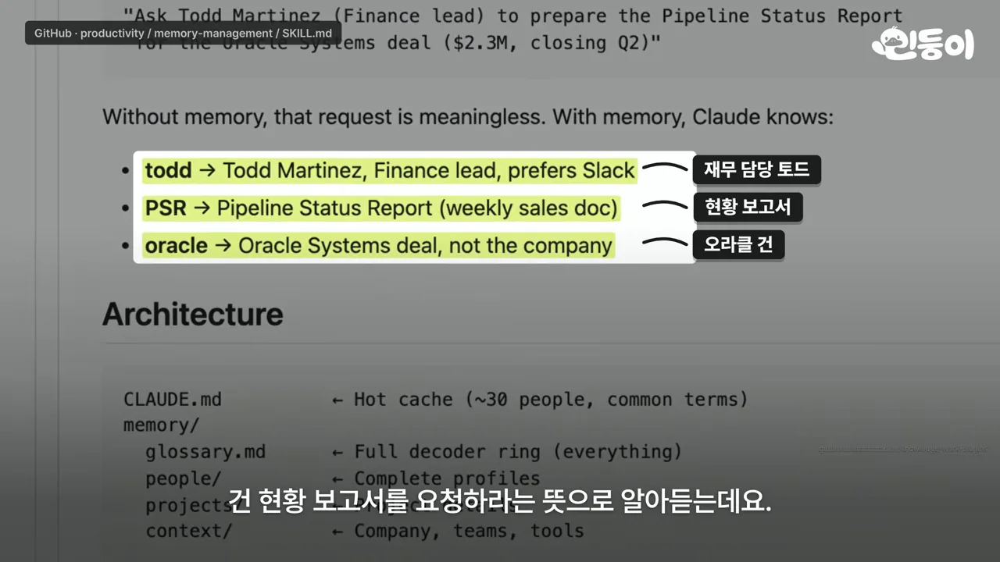
고객을 만나고 기획하기: 영업 · 고객 지원 · 제품 기획 · 마케팅
자료를 찾는 힘과 맥락을 아는 힘, 이 둘을 합친 게 영업 플러그인의 미팅 준비예요. 아래 스킬 설명을 보면 다가오는 미팅 전에 참석자, 고객 이력, 지난 통화 맥락을 모은다고 적혀 있어요. "prep me for [meeting/company]"처럼 말하면 시작해요.
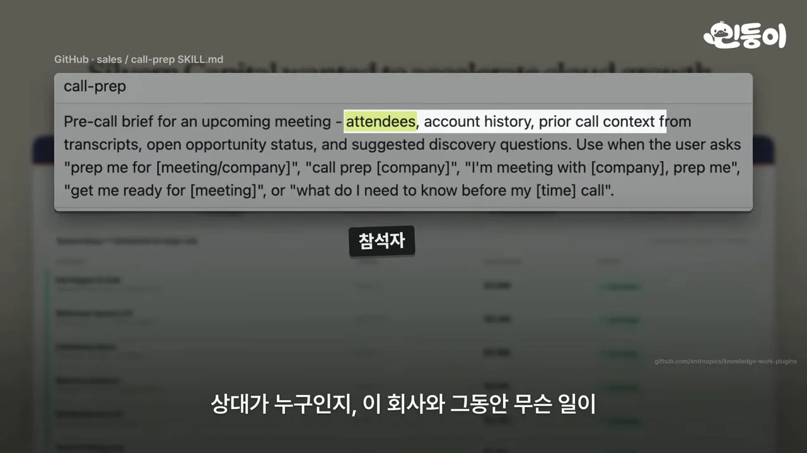
결과는 준비 문서 한 장이에요. 아래 그림 위쪽은 참석자, 회사 이력, 지난 대화이고, 아래쪽에 '던질 질문'과 '예상 반론' 칸이 따로 있어요.
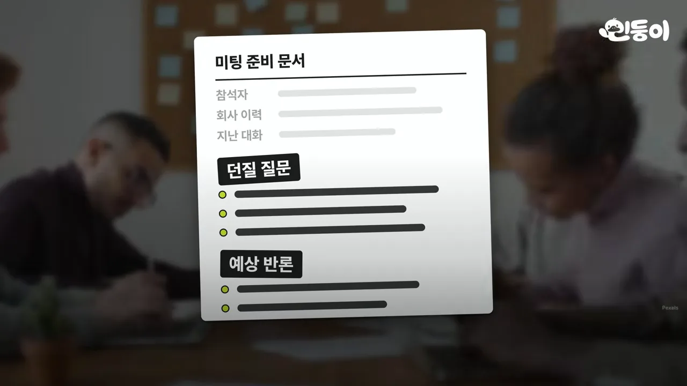
최근 업데이트도 보여 줘요. 아래는 2026년 10월 21일에 병합된 풀 리퀘스트 #1351이에요. 제목이 'feat(sales): show the source of every line with a link to check it (2.1.0)'이에요.
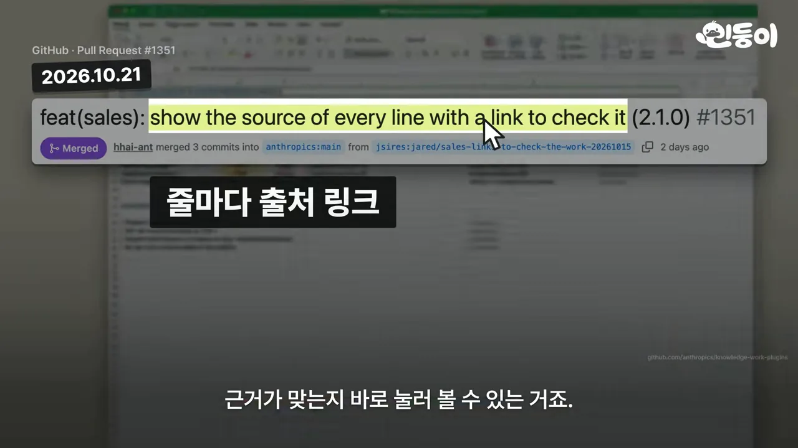
고객 지원과 제품 기획
고객 목소리가 가장 많이 쌓이는 곳은 문의 창구예요. 고객 지원 플러그인의 명령 표를 보면 /triage(분류), /research(조사), /draft-response(답장 초안), /escalate(상부 전달), /kb-article(도움말 문서)가 있어요. 위쪽 설명에서는 'Write KB articles from resolved issues' 줄이 강조돼 있어요.
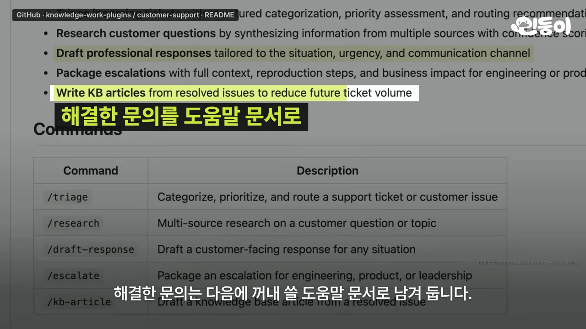
이렇게 쌓인 문의에 고객 인터뷰, 설문, 친구와 나눈 창업 아이디어까지 말로 흩어진 재료를 기획서로 엮는 게 제품 기획 플러그인이에요. 사람들이 말한 불편을 모아 얼마나 자주 나왔는지, 얼마나 큰 문제인지로 순서를 매기고, 실제로 한 말을 근거로 붙여요. 아래 기획서 스킬의 'Gather Context' 단계에는 되물을 질문이 적혀 있어요. 강조된 두 줄이 '누가 겪는 어떤 문제?'와 '뭘로 성공을 재나?'예요.
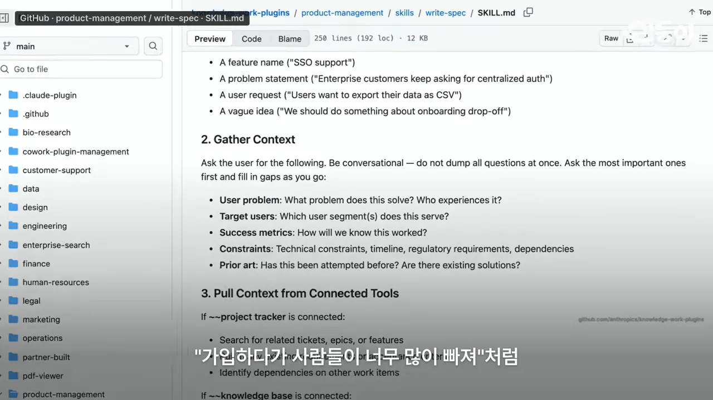
마케팅: 경쟁사를 한 장으로
기획을 하다 보면 비슷한 걸 하는 경쟁자가 궁금해져요. 보통은 경쟁사 홈페이지부터 보지만, 마케팅 플러그인은 이름만 넣으면 최근 6개월 소식, 리뷰 사이트 평가, 커뮤니티 반응까지 모아요. 그리고 우리가 파고들 빈자리와 조심할 점을 한 장으로 정리해요. 아래 스킬 파일에서 강조된 줄은 'Job postings: hiring signals that reveal strategic priorities'예요.
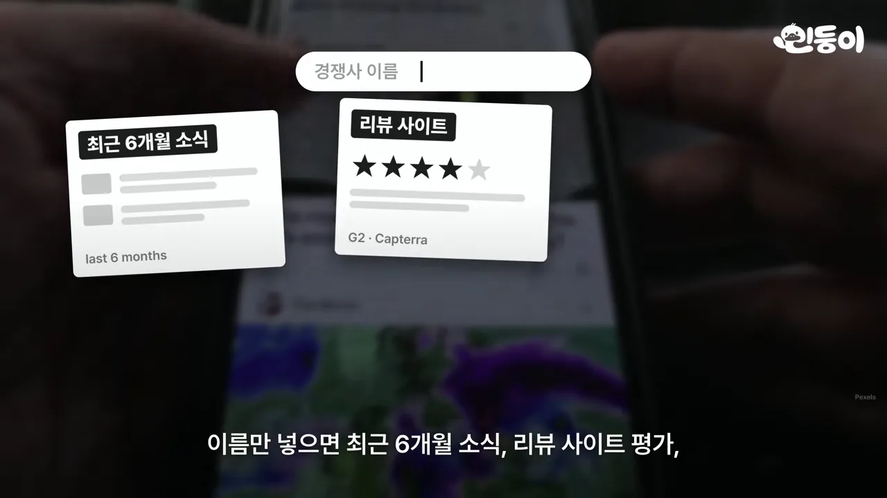
숫자 · 계약 · 연구, 그리고 내 방식에 맞추기
숫자를 다루는 플러그인은 두 개인데 성격이 조금 달라요. 데이터 플러그인은 조회하고 그래프로 그리는 쪽이에요. 아래 /validate-data 설명에는 공유하기 전에 정확성, 방법론, 편향을 검토한다고 적혀 있어요.
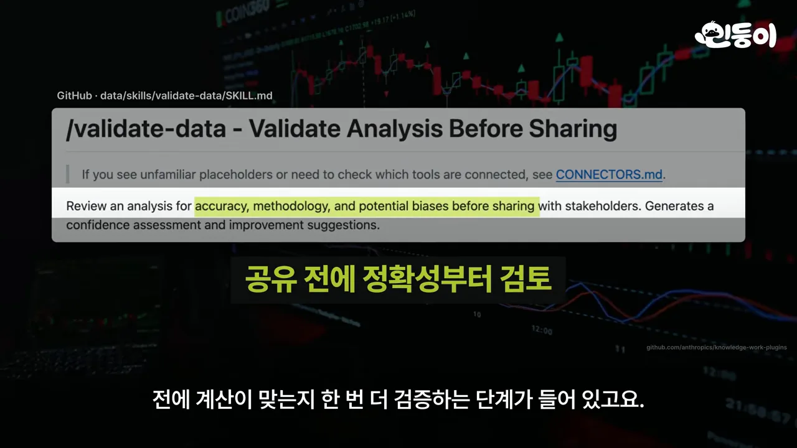
재무 플러그인은 계획과 실제를 파고드는 쪽이에요. 아래 막대그림이 차이 분석이에요. 맨 왼쪽 '계획' 막대에서 가격, 물량, 구성 몫이 차례로 빠져요. 그중 '물량' 칸이 초록색으로 강조돼 있어요.
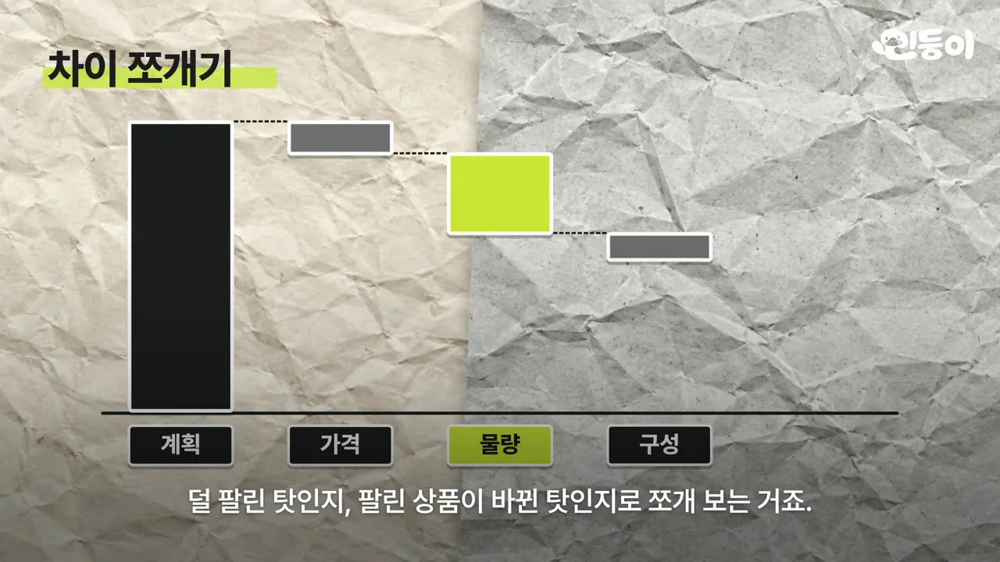
법무와 생명과학
법무 플러그인에 계약서를 올리면 불리한 조항부터 짚어내요. 자주 오는 비밀 유지 계약서는 아래처럼 세 색으로 나눠요. 초록은 그대로 서명, 노랑은 법무 검토, 빨강은 변호사 전면 검토예요.
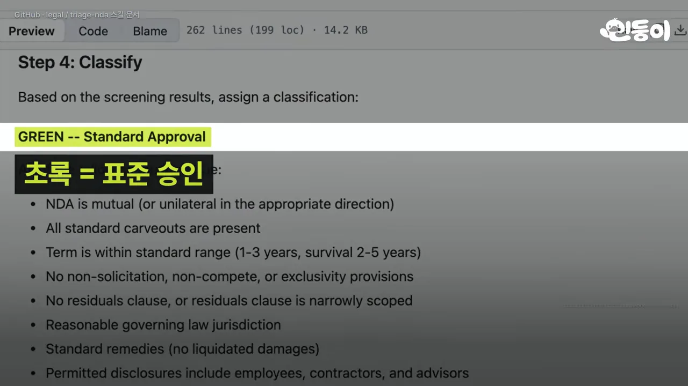
연구자라면 생명과학 플러그인도 있어요. 논문, 임상시험, 유전체 데이터를 연결해 문헌 검색부터 데이터 분석까지 도와요.
내 방식에 맞추기: 플러그인 관리
회사마다, 팀마다 쓰는 도구도 일하는 방식도 달라요. 그래서 열한 번째가 있어요. 아래 그림에서 앞의 10개(생산성부터 생명과학까지)가 위에 놓이고, 11번 '플러그인 관리(Cowork Plugin Management)'가 따로 커다랗게 놓여 있어요.
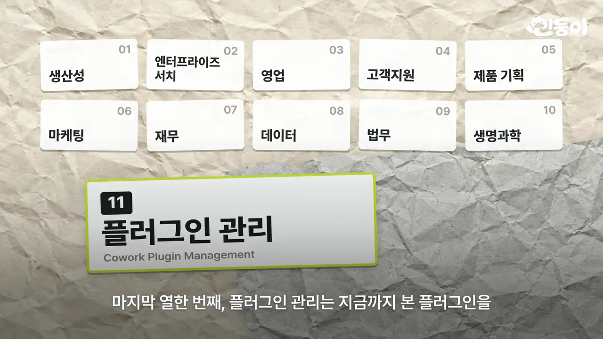
"우리 팀은 노션으로 일하고 회의는 슬랙에서 해"라고 알려 주면 그에 맞게 플러그인이 고쳐져요. 필요한 직무가 없으면 아예 새로 만들 수도 있어요.
설치
플러그인 자체는 무료라서 Claude 유료 요금제를 쓰고 있다면 설치만 하면 돼요. 아래 화면에 Claude Cowork와 요금제 네 가지 Pro, Max, Team, Enterprise가 보여요. Claude 앱의 Cowork에서 플러그인 목록을 열어 고르면 돼요.
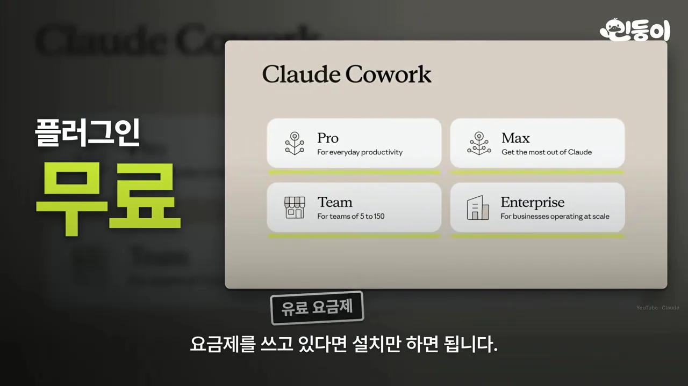
Claude Code라면 아래 README의 명령어 두 줄이면 돼요. 먼저 마켓플레이스를 추가하고, 그다음 원하는 플러그인을 설치해요.
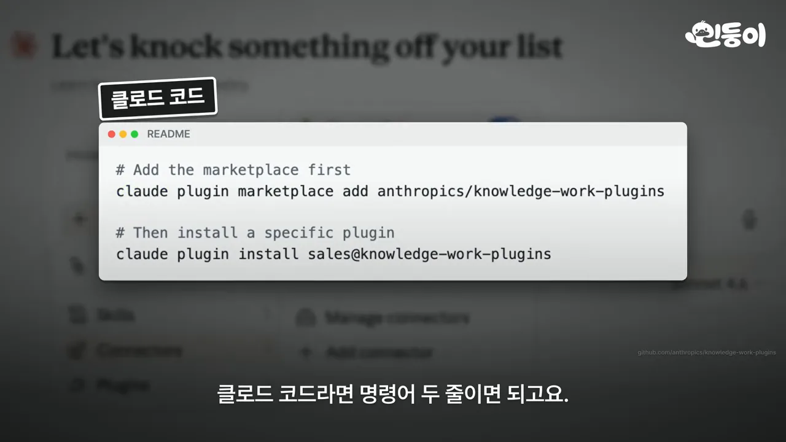
sales 자리를 다른 플러그인 이름으로 바꾸면 돼요. 영상 04:41에서 보기claude plugin marketplace add anthropics/knowledge-work-plugins
claude plugin install sales@knowledge-work-plugins진행자는 처음 하나만 고른다면 생산성부터 써 보라고 권해요. 우리끼리 쓰는 말을 한 번만 알려 두는 게 얼마나 편한지 바로 느낄 수 있다는 이유예요.